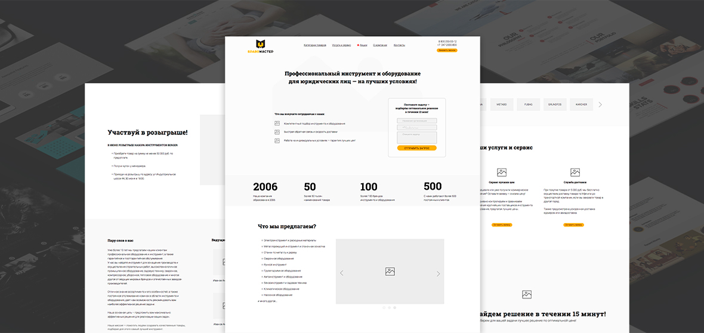
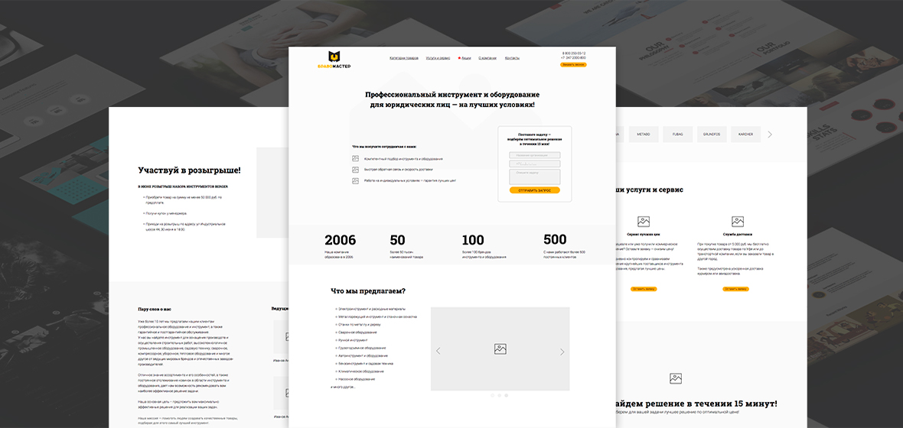

Задача проекта
Разработка прототипа сайта и тестовой версии дизайна landing page для клиентов
Было разработано более 5 видов прототипа в разной цветовой гамме и порядком15 вариантов полноценной версии сайта с разной айдетникой, мобильной и так далее.
 

Таким образом реализация намеченных плановых заданий позволяет выполнять важные задания по разработке модели развития. Повседневная практика показывает, что укрепление и развитие структуры позволяет выполнять важные задания по разработке существенных финансовых и административных условий.
Таким образом реализация намеченных плановых заданий позволяет выполнять важные задания по разработке модели развития. Повседневная практика показывает, что укрепление и развитие структуры позволяет выполнять важные задания по разработке существенных финансовых и административных условий.